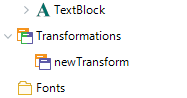
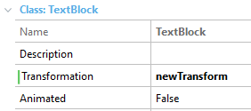

Transformations allow changing the shape, size, and/or position of an element on screen at runtime. How do they work?Transformations are applied to elements in the UI through classes. A transformation is created in the theme and associated with a class; then, the transformation is automatically applied to the elements that use that class. This makes it possible to transform elements both at design time and at runtime since classes can be assigned at any of these times. How is a transformation created?Transformations are in the theme, grouped under the Transformations node. They are added and changed in the same way as classes, and then they are referenced by classes in their Transformation property.   If a theme-class has a transformation and the Animated property enabled, the transformations will be animated -- to the extent that the platform supports it. Also, it's possible to indicate its duration. All transformations have the properties below, which allow defining the changes to be made when it is applied.
Note: xx % values are relative to the initial size of the control when the transformation is applied. Translate properties groupAllows changing the position of an element on the screen.
Examples: Scale properties groupWhen a control is scaled, the size of both control and content changes proportionally.
The values for Value X and Value Y are percentages or dips. If the scaling is to be made in only one coordinate, the other one must be set to 100%. Resize properties groupWhen a control is resized, the size of it changes proportionally. Unlike Scale, the control's content remains unchanged (only changes the size of the control). Resize the control at control level only (unlike Scale properties group).
The values for Value X and Value Y are percentages or dips. If the scaling is to be made in only one coordinate, the other one must be set to 100%. Notes:
Rotate properties groupIt indicates the angle of the rotation in degrees.
Relative To propertyThis property indicates the size to be taken into account when the transformation is applied. The values that can be used by this parameter are as follows: For example, if I have a layout with a table of 400x300 which contains an image of 100x100, if I scale (100%, 100%) the image, the final size will be: Note for Angular: Only "Current Control" is supported. CSS only supports this value natively. ScopeGenerators: Android, Angular, Apple
|
| Backlinks | |
| Animated property | Animation Duration property (for Animation Theme class) |
| Toc:Native Mobile Applications Development | |
| Category:Theme object | Using Custom Fonts |